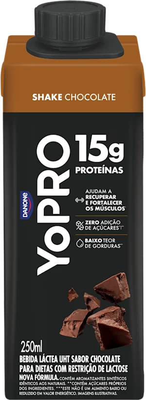
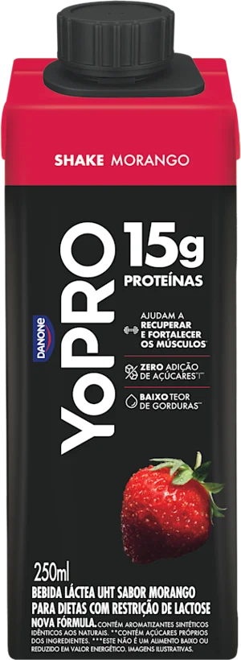
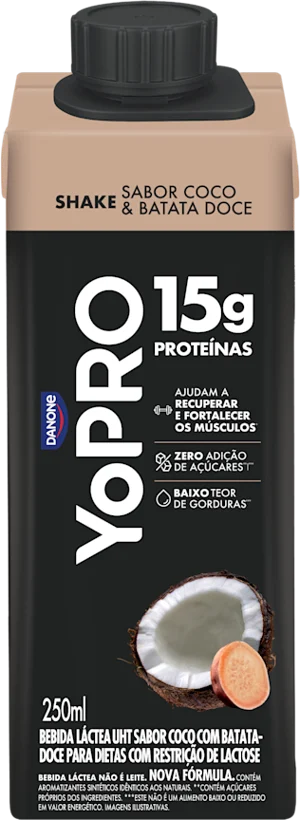
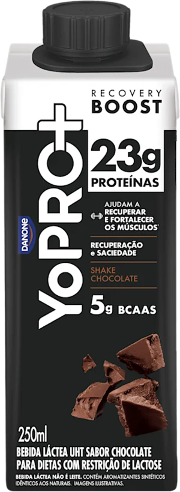
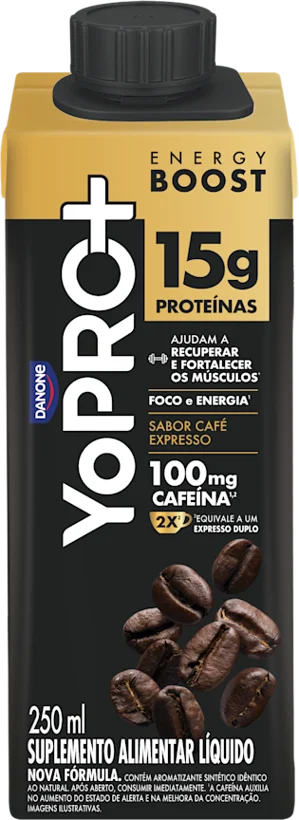
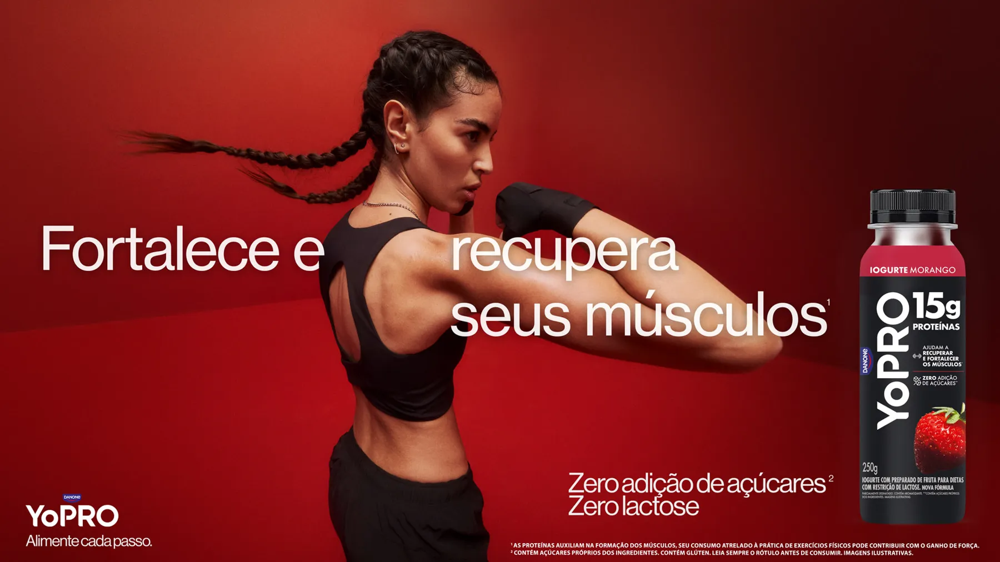
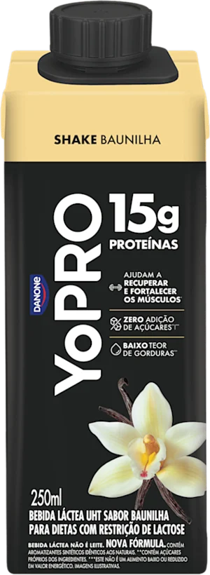
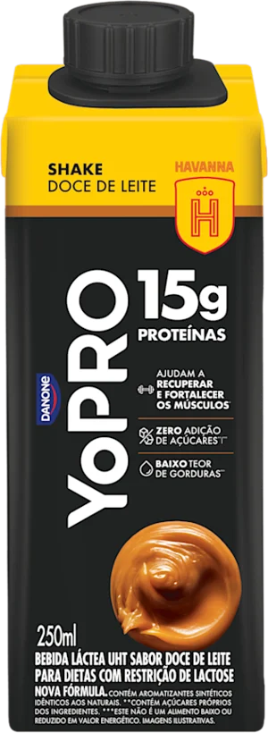

75LAB · Planejamento estratégico 2027
DanonePDV 2027
Sistema inteligente de trade marketing e ponto de venda: transformar materiais físicos em um ecossistema modular, rastreável e orientado por dados.
ESTRATÉGIA → DESIGN → TECNOLOGIA → EXECUÇÃO
Síntese executiva
O planejamento em seis respostas.
O que foi pedido?
Uma demonstração proativa de que a 75LAB entrega materiais de PDV criativos, modulares e conectados a tecnologia.
O que a Danone precisa?
Uma proposta que mostre como a 75LAB contribui para eficiência, qualidade e inteligência da execução comercial.
Qual é a oportunidade?
Transformar materiais de PDV em ativos adaptáveis, rastreáveis e integrados à gestão de campo.
Qual é a estratégia?
Um ecossistema modular para YoPRO: experiência do shopper, clusterização, execução auditável e dados.
O que a 75LAB deve fazer?
Uma demonstração integrada que conecte estratégia, design, engenharia, tecnologia e operação.
Próximo passo
Sprint interno de concepção e viabilidade do Sistema YoPRO UHT · Cada PDV Conta.
Documento de planejamento da 75LAB para prospecção. Não representa aprovação, compromisso comercial ou resultados comprovados da Danone.
Capítulo 1
Diagnóstico
O desafio, o que sabemos, a marca, o mercado, a concorrência e o shopper.
01Leitura do desafio
Não é mostrar quantas peças a 75LAB cria. É mostrar quais problemas resolve.
De
Um catálogo de materiais de PDV com recursos tecnológicos. A empresa apresenta o que sabe produzir.
Para
Um ecossistema de execução comercial inteligente, demonstrado em uma marca real. A empresa mostra quais problemas resolve.
Modularidade
Sistema físico adaptável a canais e espaços.
Criatividade
Peças que atraem e facilitam a escolha.
Rastreabilidade
Onde cada material está e em que condição.
Execução
O plano vira rotina de campo auditável.
Inteligência
Evidências para corrigir e melhorar resultados.
A criatividade é a porta de entrada. A inteligência operacional é o verdadeiro diferencial.
01Diagnóstico inicial
A Danone já usa tecnologia no PDV. LED, QR ou AR sozinhos não diferenciam.
Inteligência de gôndola
A Danone foi tema de reportagem sobre plataforma de inteligência de gôndolas. A proposta precisa dialogar com o gerenciamento por categorias que já existe.
YoPRO no Gbarbosa
Ativação com expositor interativo. O material divulgado reportou +35% de vendas nas lojas participantes. O número não prova causalidade e não serve como meta.
Parceira de ponta a ponta
A 75LAB se posiciona para planejar, materializar, implementar, acompanhar e otimizar a presença das marcas no PDV, ligando o investimento em materiais ao desempenho da execução.
Risco a evitar desde a abertura: a Danone ler a proposta como venda de serviços que ela já contrata. Reconhecer a maturidade dela e mostrar o valor da integração.
02Decupagem do briefing
O desafio declarado e o desafio real.
| Dimensão | Leitura estratégica |
|---|---|
| Natureza | Prospecção comercial proativa da 75LAB |
| Desafio declarado | Demonstrar um enxoval inteligente e inovador de PDV |
| Desafio real | Provar capacidade integrada de criação, escala, execução e mensuração |
| Para a 75LAB | Abrir relacionamento e oportunidades comerciais com a Danone |
| Para a Danone | Mais produtividade do investimento em trade, disponibilidade e qualidade da execução |
| Trade | Adaptar a exposição ao canal, elevar conformidade, gerar inteligência por loja |
| Jornada | Atenção → Escolha → Compra, com monitoramento contínuo |
| Restrições | Sem orçamento, volumes, cronograma, autorizações ou especificações técnicas |
O que cada público precisa entender ou fazer
| Shopper | Reconhecer o produto, entender o benefício, achar o preço |
| Comprador do varejo | Ver ganho de exposição sem prejudicar operação e espaço |
| Trade Danone | Ver um sistema aplicável, auditável e otimizável |
| Category management | Compatibilidade com sortimento, planogramas e missões |
| Promotor | Instalar, abastecer, fotografar e reportar com facilidade |
| Liderança comercial | Oportunidades por rede, região e loja |
| 75LAB | Proposta replicável e comercialmente contratável |
03 · 04O que sabemos · O que precisamos descobrir
Seis lacunas são críticas antes de prometer qualquer coisa.
| Sabemos | Não sabemos | Precisamos descobrir | Impacto |
|---|---|---|---|
| A abordagem é proativa | Quem receberá a apresentação | Área, cargo e poder de decisão | Crítico |
| O portfólio Danone é amplo | Marca prioritária em 2027 | Agenda de trade e categoria prioritária | Crítico |
| Queremos demonstrar execução | Tecnologias já contratadas | Sistemas, integrações e lacunas | Crítico |
| Haverá enxoval de PDV | Mix e SKUs exatos | Embalagens e manuais atualizados | Crítico |
| Piloto é possível como proposta | Acesso e permissão de lojas | Redes parceiras e seleção | Crítico |
| Queremos mostrar app de campo | Maturidade do produto | O que está pronto, em desenvolvimento ou é conceito | Crítico |
| Queremos mostrar resultado operacional | Baseline comercial | Histórico e métricas disponíveis | Crítico |
| Há expertise em modularidade | Investimento aceitável | Faixas de CAPEX e OPEX | Importante |
| Existem múltiplos canais | Redes e regiões relevantes | Base comercial, canais e clusters | Importante |
| Existe intenção de rastreio | Sistema de identificação | Arquitetura e acessos | Importante |
| Existe intenção de AR | Interesse real do shopper | Pesquisa rápida de uso | Desejável |
Decisão: avançar com proposta demonstradora, sem pressupor que a Danone contratará todos os módulos nem que tecnologias ainda não verificadas estejam prontas. A plataforma de promotores ainda precisa ser comprovada frente ao Involves.
05Contexto de marca
A marca demonstradora: YoPRO, com foco nas bebidas UHT.
| Marca | Oportunidade de PDV | Limitação para o projeto |
|---|---|---|
| YoPRO ✓ | Proteína, conveniência, ocasiões e canais variados | Concorrência intensa e ativações já sofisticadas |
| Activia | Bem-estar digestivo, navegação e educação | Muito refrigerado; atenção a alegações de saúde |
| Danoninho | Visibilidade, momentos de consumo, soluções lúdicas | Público infantil e exigências de comunicação |
| Danette | Indulgência e comunicação sensorial premium | Menor amplitude fora do refrigerado |
| Corpus | Leveza e diferenciação funcional | Relevância precisa ser testada |
Avaliação qualitativa de potencial demonstrador, não ranking de share nem prioridade oficial da Danone.
Por que YoPRO UHT
- #2Segunda marca mais vendida da Danone no Brasil (reportagem de ago/2026).
- UHTPermite estudar displays fora da área refrigerada.
- 1×Embalagens individuais facilitam módulos compactos e reposição.
- ↻Ocasiões distintas permitem comunicar por missão de compra.





Produto de referência: família YoPRO UHT, versão de 15 g de proteína, sujeita à confirmação de SKUs, sabores, alegações e medidas de 2027. Nenhum claim fixado antes da validação.
05Linguagem e posicionamento
“Cada YoPRO conta”: proteína, sabor e praticidade na rotina.
Direção visual preliminar
- 01Reconhecimento imediato da embalagem e do logo.
- 02Alto contraste, tipografia forte, só o essencial.
- 03Elementos que expressem movimento.
- 04Diferença clara entre as versões do portfólio.
- 05Benefícios legíveis, sem excesso de claims.
- 06Hierarquia que preserve preço, acesso e reposição.
Não transformar o enxoval em réplica de equipamento de academia: ligar a atividade física a situações reais de compra.

| Posicionamento pretendido | Pergunta a testar no PDV |
|---|---|
| Aliada de diferentes rotinas | O shopper percebe usos além do pós-treino? |
| Nutrição prática | O produto é achado perto da ocasião? |
| Proteína com sabor | Benefício e sabor são percebidos juntos? |
| Marca na vida ativa | A comunicação fala também com não atletas? |
06Contexto de mercado
A categoria cresce, e o PDV precisa responder três decisões.
Volume de bebidas proteicas UHT no Brasil, 2025 vs. 2024 (Nielsen, via Veja, 2026)
Vendas da indústria alimentícia ao varejo, 2025 (ABIA; indicador amplo)
Varejo
Onde e como expor?
Shopper
Por que esta versão?
Trade
Investir, manter, corrigir ou retirar?
Oportunidades por canal hipóteses
| Canal | Missão a investigar | Solução a testar |
|---|---|---|
| Hipermercado | Compra planejada e descoberta | Display de chão e ocasião de consumo |
| Supermercado | Abastecimento e comparação | Módulo de gôndola e pontos complementares |
| Atacarejo | Volume e preço | Expositor robusto de maior capacidade |
| Conveniência | Rapidez e consumo imediato | Display de balcão ou compacto |
| Proximidade | Reposição frequente, pouco espaço | Kit leve de alta legibilidade |
| Fora do lar | Necessidade pontual | Presença seletiva, conforme modelo comercial |
Movimentos: proteína como atributo de escolha · conveniência · premiumização funcional · mais alternativas · varejo mais complexo.
07Concorrência
Ninguém vence por instalar tecnologia primeiro. Vence quem integra as respostas.
Piracanjuba ProForce
Teor proteico, variedade e conveniência. YoPRO pode diferenciar por ocasião, experiência e navegação, não só por gramas.
Nescau Protein
Pronto para beber, 15 g, sabor conhecido. YoPRO precisa deixar claros os atributos próprios e novas ocasiões de exposição.
Vigor
Relevante em lácteos. Observar disposição, preço, variedade e execução em campo antes de definir respostas.
Concorrência indireta
Proteína em pó, barras, lanches prontos, energéticos e outras opções de conveniência.
Qual solução o shopper acha mais apropriada naquele momento?
As seis perguntas que o sistema precisa responder
- 1Qual configuração corresponde a cada loja?
- 2Qual material foi instalado de fato?
- 3O que ocorreu depois da instalação?
- 4Os produtos estão disponíveis e bem expostos?
- 5Quem corrige os problemas de campo?
- 6Como o resultado orienta o próximo investimento?
08Shopper e públicos
Se a peça não responde rápido, a sofisticação perde valor comercial.
Rotina ativa
Precisa de uma opção prática no dia. Fale de sabor, praticidade e acesso.
Pratica exercícios
Quer escolha compatível com hábitos. Fale com informação nutricional clara.
Comprador pragmático
Avalia benefício versus preço. Compare formatos e versões com simplicidade.
| Etapa | Barreira | Estímulo / mensagem | Solução |
|---|---|---|---|
| Contexto | Sem intenção específica | Reconhecimento da marca | Presença estratégica |
| Estímulo | Ruído visual | Identidade YoPRO | Testeira e stopper |
| Interesse | Diferenças pouco claras | Proteína, sabor e praticidade | Hierarquia de informação |
| Interação | Pouco tempo para conteúdo | Convite opcional | QR com WebAR |
| Decisão | Comparar preço e versão | Clareza | Organização por SKU e porta-preço |
| Ação | Produto indisponível ou mal posicionado | Facilidade de acesso | Ergonomia e reposição |
Perfis são segmentos de planejamento, não resultado de pesquisa. A AR complementa; nunca condiciona o acesso a preço, produto ou informação essencial.
09Tendências relevantes para 2027
A maior tendência é a convergência: material, execução e dados.
PDV modular
Estruturas reutilizáveis, comunicação substituível.
Cuidado: não complicar encaixes.
Retail media
Conteúdo dinâmico onde autorizado.
Cuidado: justificar o custo da tela.
Inteligência de execução
Indicadores por rede e cluster.
Cuidado: converter dados em ações.
Visão computacional
Apoio à contagem e à ruptura.
Cuidado: validar a precisão real.
Realidade aumentada
Experiência e informação extra.
Cuidado: não atrapalhar a compra.
Rastreabilidade
Histórico de localização e conservação.
Cuidado: definir o processo de leitura.
Sustentabilidade aplicada
Reutilização e reparabilidade.
Cuidado: medir, não só comunicar.
Personalização por canal
Formatos aderentes à missão de compra.
Cuidado: evitar variações sem ganho.
Capítulo 2
Estratégia
Dos insights à tensão central, à oportunidade e ao conceito que organiza tudo.
10Principais insights
O melhor material é o que continua instalado e abastecido.
| # | Insight | Consequência prática |
|---|---|---|
| 01 | O melhor material permanece instalado e abastecido | Projetar manutenção com impacto visual |
| 02 | Escala perde eficiência quando ignora diferenças entre lojas | Definir clusters antes de desenhar |
| 03 | A proteína atrai; a ocasião contextualiza | Combinar benefício e rotina |
| 04 | Display sem produto não vende | Auditar exposição e ruptura |
| 05 | Varejista valoriza espaço, fluxo e reposição | Demonstrar ergonomia |
| 06 | Inteligência depende de dados confiáveis | Padronizar pesquisa e auditoria |
| 07 | AR engaja, mas não substitui informação legível | Digital opcional |
| 08 | O diferencial é ligar o plano ao realizado | Unificar materiais, campo e mensuração |
Os três prioritários
A escala começa na arquitetura, não na quantidade.
Módulos compartilhados reduzem adaptações individuais.
O investimento precisa render depois da instalação.
Auditoria, manutenção, reaproveitamento e realocação.
O diferencial é a integração, não uma tecnologia.
Registrar visitas é útil; resolver ocorrências com responsável e evidência vale mais.
11Tensão central
Quatro conflitos possíveis. Um escolhido.
Padronização × realidade local
Padronizar a arquitetura e configurar por PDV.
Impacto visual × eficiência operacional
Transformar funcionalidade em diferencial criativo.
Investimento × visibilidade da execução
Integrar identificação, auditoria e dados.
Inovação × uso real
Tecnologia proporcional à necessidade.
A indústria consegue planejar uma execução nacional consistente, mas cada loja tem condições diferentes que podem comprometer a implementação, a manutenção e a mensuração dessa estratégia.
É a tensão mais relevante para a prospecção porque conecta criatividade, modularidade, produção, serviços e dados em uma única proposta.
12 · 13Grande oportunidade · Como podemos
Transformar a presença de YoPRO em um sistema modular, rastreável e orientado por dados.
Problema
Execução heterogênea e acompanhamento limitado.
Comportamento
Decisões e jornadas de compra diferentes por canal.
Negócio
Melhor uso do investimento em trade e ganho de execução.
Marca
Presença mais consistente, útil e relevante de YoPRO.
Como podemos transformar a presença de YoPRO em diferentes canais em uma experiência modular que facilita a escolha do shopper, simplifica a execução e gera inteligência para melhorar continuamente o investimento em PDV?
Filtro para todo o projeto: se um material ou tecnologia não contribui para escolha, execução ou inteligência, sua presença deve ser questionada.
14Estratégia central
De iniciativas isoladas para um sistema integrado.
De
Materiais desenvolvidos e avaliados como iniciativas isoladas.
Para
Sistema integrado de exposição, execução e inteligência por loja.
Através de
Arquitetura modular, comunicação relevante, rastreabilidade de ativos, coleta de campo e análise de desempenho.
Proposta de valor da 75LAB: o ciclo que deve ser o centro da apresentação
Em destaque, as etapas que a maioria dos fornecedores de PDV não entrega e onde a 75LAB se diferencia.
15Pilares estratégicos
Cinco verbos que organizam todas as entregas.
Adequar
Escolher a configuração certa para cada loja.
Clusterização, compatibilidade com canal, melhor alocação de materiais.
Conquistar
Tornar YoPRO reconhecível e facilitar a compra.
Exposição criativa, hierarquia de informação, comunicação por ocasião.
Simplificar
Menos complexidade de produção, instalação e reposição.
Módulos padronizados, montagem simples, troca rápida, manutenção planejada.
Comprovar
Registrar presença e condição dos materiais.
Identificação única, auditorias, evidência fotográfica, histórico.
Evoluir
Usar dados para corrigir falhas e aperfeiçoar investimentos.
Dashboards, indicadores, alertas, planos de ação, revisão de clusters.
16Territórios conceituais
Quatro caminhos avaliados. Recomendado: Cada PDV Conta.
Cada ponto de venda é uma oportunidade de negócio que merece solução correta e execução comprovável.
Racional
Conecta a individualidade da loja à escala de uma grande indústria. Dialoga com “Cada YoPRO conta”, sem substituí-la.
Experiência
Uma plataforma física em três configurações; cada instalação com identificação única e histórico no painel.
Desdobramentos
Enxoval, visualização por clusters, app de auditoria, dashboard, estudo de caso e vídeo.
Cuidado
Conceito interno de prospecção; uso público requer aprovação da Danone.
A experiência YoPRO acompanha os ritmos de compra e os formatos do varejo.
Racional
Liga o universo de vida ativa da marca à diversidade da jornada comercial.
Experiência
Módulos grandes, médios e pequenos, organizados pela missão de compra predominante.
Força
Repertório criativo e linguagem para o shopper.
Limitação
Explica menos a dimensão de rastreabilidade e inteligência.
O PDV deixa de ser instalação estática e vira ativo gerenciado continuamente.
Racional
O ciclo de vida não termina na entrega à loja.
Experiência
Instalação, vistoria, falha identificada, correção e indicadores atualizados.
Força
Forte para trade, operações e compras.
Limitação
Técnico demais como conceito principal para o shopper.
Tornar YoPRO encontrável e relevante em momentos distintos do dia.
Racional
A ocasião pode importar tanto quanto o lugar habitual da categoria.
Experiência
Materiais por canal e jornada, com conteúdo digital opcional.
Força
Comunicação direta ao consumidor.
Limitação
Não demonstra sozinho a operação integrada da 75LAB.
Aderência à prospecção (avaliação interna)
| Cada PDV Conta | |
| No Ritmo de Cada Loja | |
| Exposição que Evolui | |
| Proteína na Sua Rota |
A comunicação ao shopper pode aproveitar elementos de “No Ritmo de Cada Loja”, sempre respeitando a identidade oficial de YoPRO. Notas são julgamento deste planejamento, não pesquisa.
Capítulo 3
Ecossistema de soluções
Uma família com arquitetura comum, adaptada a cada loja. Nada de peças desconectadas.
17.1Ecossistema de soluções
Três camadas: mostrar, reforçar e escalar.
Sistema expositor modular YoPRO UHT
A principal demonstração física de capacidade, comunicação e configuração.


Enxoval complementar
Réguas, stoppers, testeiras, porta-preços, sinalização, QR e acessórios.
Papel: aumentar visibilidade, clareza e cobertura.
Gestão e expansão
Clusterização, rastreio, aplicativo, dashboard, manutenção e expansão.
Papel: ampliar e gerenciar o sistema.
Modularidade não exige que um único móvel vire todos os outros. É uma família que compartilha interfaces, componentes, padrões de montagem e troca de comunicação.
17.2Hero · sistema expositor modular
Uma família, três configurações.
Display de chão completo
Lojas com espaço e potencial. Estrutura vertical, prateleiras ajustáveis, testeira destacada, comunicação substituível, porta-preços e identificação. Digital opcional.
Expositor compacto
Menor ocupação, capacidade proporcional ao giro, estrutura simplificada, marca forte e reposição frontal. Instalação rápida, logística mais barata.
Display de balcão
Conveniência e proximidade. Pequeno, leitura frontal e acesso direto às embalagens. Pode receber QR e identificação técnica.
| Funcionalidade | Problema resolvido | Funcionalidade | Problema resolvido |
|---|---|---|---|
| Prateleiras ajustáveis | Variação de embalagem e sortimento | Base nivelada / pés reguláveis | Estabilidade em pisos diferentes |
| Encaixe padronizado | Montagem e substituição rápidas | Peças substituíveis | Manutenção de avarias |
| Comunicação removível | Atualizar sem trocar a estrutura | Identificação por QR | Registro e rastreabilidade |
| Porta-preço integrado | Informação e manutenção pelo varejo | Embalagem otimizada | Custo logístico controlável |
| Acesso frontal | Retirada e reposição fáceis | Digital opcional | Investimento conforme o cluster |
Rodízios, iluminação, travas e eletrônica só com justificativa funcional.
17.3Support · enxoval complementar
Seis peças bem resolvidas valem mais que quinze sem função.
| Material | Função | Prioridade |
|---|---|---|
| Régua de gôndola | Reforçar marca e identificar produto | Alta |
| Stopper com faca especial | Visibilidade lateral | Alta |
| Testeira modular | Presença no expositor | Alta |
| Display compacto | Cobertura em lojas menores | Alta |
| Porta-preço | Compra e operação | Alta |
| Identificação técnica do ativo | Auditoria e rastreio | Alta |
| Wobbler | Destacar mensagem específica | Média |
| Faixa para ponto extra | Identificação complementar | Média |
| Tag QR da experiência | Acesso digital | Média |
| Tela digital | Conteúdo dinâmico em lojas selecionadas | Condicional |
peças de prioridade alta formam o kit essencial: régua, stopper, testeira, display compacto, porta-preço e identificação do ativo.
17.4Scale · clusterização inteligente
Cada loja recebe a configuração que faz sentido.
| Critério | Cluster A · Estratégico | Cluster B · Intermediário | Cluster C · Compacto |
|---|---|---|---|
| Potencial | Alto | Médio | A validar |
| Espaço | Maior | Moderado | Restrito |
| Hero | Display completo | Compacto | Balcão ou kit |
| Suporte | Enxoval ampliado | Kit essencial | Régua + stopper |
| Digital | WebAR possível | QR e conteúdo | QR opcional |
| Tela | Só se justificada | Não prioritária | Não recomendada |
| Auditoria | Conforme risco e valor | Regular | Otimizada |
| Investimento | Maior, condicionado a retorno | Moderado | Enxuto |
Clusters são hipóteses de aplicação, não classificação real da base Danone. A seleção deve combinar potencial, espaço autorizado, canal, mix, frequência de atendimento, custo e oportunidade. Uma loja pequena pode merecer investimento alto se o potencial justificar.
17.5Produção e engenharia desde o planejamento
O protótipo só passa se funcionar na loja.
| Material | Vantagem potencial | Atenção |
|---|---|---|
| Papelão estrutural | Leve, menor investimento inicial | Umidade, impacto, vida útil |
| PS ou PETG | Comunicação moldada e limpeza | Espessura, fixação, resistência |
| Metal tubular ou chapa | Estabilidade e reutilização | Peso e logística |
| MDF revestido | Acabamento em aplicações adequadas | Umidade e transporte |
| Construção híbrida | Otimização por componente | Complexidade de montagem |
O executivo testa carga, estabilidade, encaixes, limpeza, troca de comunicação, embalagem, transporte e desmontagem. O demonstrador UHT não autoriza expor refrigerados: esses exigem projeto próprio.
Dez critérios de aprovação
- 01Suporta a carga real de embalagens
- 02Acesso fácil a todos os SKUs
- 03Preço sempre visível
- 04Não obstrui corredores, saídas ou equipamentos
- 05Montagem e desmontagem padronizadas
- 06Partes danificadas substituíveis
- 07Respeita identidade e proporções da marca
- 08Cabe em embalagem e logística viáveis
- 09Permite auditoria e registro de instalação
- 10Reutilizável dentro dos limites previstos
Capítulo 4
Inovação e tecnologia
Tecnologia proporcional ao problema: AR para o shopper, rastreio para o ativo, app e dashboard para a execução.
18 · 18.1Inovação em seis camadas · Realidade aumentada
A inovação está em seis camadas, não só na tela.
Hierarquia visual por produto, benefício e ocasião.
Família de expositores com componentes compartilhados.
Instalação, auditoria e manutenção conectadas.
QR individual, WebAR, formulários e dashboards.
Solução oferecida por módulos e níveis de serviço.
Inteligência por loja, cluster, material e ação corretiva.
WebAR demonstradora · “YoPRO acompanha o seu ritmo”
Medir acessos únicos, início e conclusão, interações e cliques. Evitar recomendação nutricional individual, alegações não aprovadas e qualquer atraso na compra. Ter alternativa web quando não houver AR.
18.2Rastreabilidade
Cada material vira um ativo com identidade e histórico.
Campos de cada ativo
- ·ID do material, modelo e versão da arte
- ·Ordem e lote de produção
- ·Rede, loja e cluster de destino
- ·Datas de envio, recebimento e instalação
- ·Fotos, auditorias, conservação e manutenção
- ·Histórico de movimentação, baixa e custos
QR Code não é GPS.
Escanear uma etiqueta comprova uma interação registrada, não localização contínua nem instalação correta. A validação combina usuário autorizado, data, identificação e foto.
Bônus: o sistema aponta materiais disponíveis para realocação e evita produção desnecessária.
18.3 · 18.4Plataforma de gestão de promotores
Não “um concorrente do Involves”: software + PDV + campo em uma só mão.
| Módulo | Funcionalidades propostas | Valor |
|---|---|---|
| Equipes | Cadastro, perfis, permissões, responsáveis | Organização |
| Roteirização | Agenda, lojas, visitas previstas e realizadas | Produtividade |
| Check-in | Loja, horário e localização pontual | Evidência |
| Pesquisa de preço | Regular, promoção, concorrência, foto | Inteligência |
| Auditoria de sortimento | Presença dos SKUs e disponibilidade | Oportunidades |
| Auditoria de materiais | QR, condição, localização, foto, versão | Controle |
| Auditoria de exposição | Facings, planograma, concorrência | Qualidade |
| Pendências | Ocorrência, responsável, prazo, solução | Correção |
| Biblioteca | Manuais, instruções, planogramas | Padronização |
| Dashboard | Rede, período, região, cluster, PDV | Decisão |
Honestidade sobre maturidade
| Pronto e testado | Demonstração funcional com evidência |
| Protótipo | Indicar explicitamente: MVP ou piloto |
| Conceito | Tela ilustrativa, sem promessa de prazo |
O Ariuno já mostra tarefas, formulários, registros, aprovações e painéis, mas não comprova todos os módulos de uma plataforma de promotores. Auditar antes de qualquer promessa externa.
Para depois: reconhecimento de imagem, priorização automática de lojas, alertas de reincidência, sell-out por API, roteirização assistida.
18.5 · 18.6 · 18.7Exemplo integrado · Arquitetura de dados · Privacidade
Um caso real resolvido vale mais que telas isoladas.
Arquitetura de dados
Material + loja + visita → coleta padronizada + foto + status → base com validações → dashboard + alertas + responsáveis → correção + auditoria + aprendizado.
Questionários por cliente podem variar, mas mantêm um núcleo comum para comparar lojas ao longo do tempo.
Privacidade e conformidade
LGPD desde a concepção: geolocalização, fotos, identificação de colaboradores, retenção e acesso. Localização ligada a pessoa identificável é dado pessoal.
Textos nutricionais, AR, imagens e alegações passam pela aprovação de marca e regulatório (ANVISA).
Capítulo 5
Execução
O que entregar, como cobrar, como medir, o que pode dar errado e em que ordem fazer.
19Entregáveis e priorização
O que é obrigatório, o que amplia e o que é condicional.
- ·Estratégia e escolha de YoPRO
- ·Sistema físico em 3 configurações
- ·Enxoval essencial executável
- ·Protótipo ou demonstração de montagem
- ·QR individual e fluxo de rastreio
- ·Protótipo navegável de campo e dashboard
- ·Demonstração simples de WebAR
- ·Simulação de auditoria integrada
- ·Argumentação comercial e proposta de piloto
- ·Protótipos de mais de um cluster
- ·App funcional para coleta real
- ·Dashboard com dados de teste
- ·Chamados e manutenção
- ·Pesquisa de preço e concorrência
- ·Simulação logística e reaproveitamento
- ·Vídeo da jornada completa
- ·Reconhecimento por imagem, RFID ou NFC
- ·Tela integrada e sensores
- ·Roteirização automatizada com IA
- ·Integrações corporativas complexas
- ·AR expandida e gamificada
A AR entra no demonstrador porque está no objetivo da prospecção; em escala, só se provar utilidade.
19.1 · 19.5Entregáveis por área · Modelo comercial
Nove frentes de trabalho, quatro módulos para vender.
| Área | Entregáveis | Função |
|---|---|---|
| Estratégia | Diagnóstico, benchmarking, clusters, jornada, business case | Justificar |
| Criação | Conceito, sistema visual, enxoval, artes planificadas | Tangibilizar |
| 3D | Mockups por canal, vistas técnicas, simulação de loja | Mostrar uso real |
| Engenharia | Executivo, materiais, protótipo, testes, manual | Comprovar viabilidade |
| Conteúdo | Vídeo, roteiro digital, manuais | Explicar |
| Digital | WebAR, QR, interface de campo, dashboard | Demonstrar tecnologia |
| Implementação | Logística, instalação, auditoria, manutenção | Organizar execução |
| Treinamento | Guia do promotor, auditoria, uso do sistema | Padronizar |
| Mensuração | KPIs, pesquisa, painel, relatório do piloto | Avaliar resultado |
Estratégia, criação, engenharia e produção.
Distribuição, instalação, manutenção e retirada.
Pesquisas, auditoria, promotores e dashboards.
WebAR, conteúdo digital e tecnologia especial.
Precificar separando desenvolvimento inicial, investimento físico, implantação, serviços recorrentes, licenças e custos por rede.
20KPIs e mensuração
Medir se a execução melhora. Sem metas sem baseline.
Os três indicadores centrais do piloto
Taxa de execução conforme
PDVs auditados e conformes ÷ PDVs auditados × 100
Conformidade aos critérios definidos.
Disponibilidade do SKU
Verificações com SKU disponível ÷ verificações aplicáveis × 100
Presença no momento auditado; não é o estoque total.
Custo por PDV conforme
Custo total da operação ÷ número de PDVs conformes
Eficiência de formatos e clusters.
Indicadores por dimensão
| Negócio | Sell-out · incremento de vendas · ROI |
| Trade | Cobertura · conformidade · ruptura · share de exposição |
| Shopper | Interação · entendimento da mensagem |
| Digital | Acessos únicos ao QR · engajamento WebAR |
| Operação | Tempo de instalação · de resolução · reaproveitamento |
| Dados | Completude da auditoria |
Como provar impacto em vendas
Antes × depois não basta. Piloto com lojas ativadas e lojas-controle comparáveis:
Efeito = (Pós − Pré) teste − (Pós − Pré) controle
Separar validação operacional (material, rastreio, fluxo) de validação comercial (vendas). Dados fictícios sempre marcados como SIMULAÇÃO.
21Pré-mortem e riscos
Se o projeto falhasse, por quê?
| Risco | Consequência | Mitigação | Risco | Consequência | Mitigação |
|---|---|---|---|---|---|
| Baixa adesão do varejo | Material não instalado | Validar formatos e autorizações antes | Dados inconsistentes | Decisão equivocada | Formulários e evidências padronizados |
| Complexidade excessiva | Montagem cara e lenta | Simplificar e testar | Falta de integração | Retrabalho | Mapear sistemas e APIs |
| Clusters errados | Investimento mal alocado | Critérios comerciais e operacionais | Conservação inadequada | Produto danificado | Respeitar cada SKU |
| Reposição difícil | Expositor vazio | Teste com produtos reais | Custo elevado | Escala inviável | Avaliar CAPEX, logística, OPEX |
| Tecnologia sem uso | Custo sem valor | Validar usabilidade, começar simples | Questionamento regulatório | Comunicação retirada | Aprovar alegações e uso de dados |
| App incompleto | Perda de credibilidade | Separar pronto, MVP e conceito | Resultado inconclusivo | Expansão difícil | Baseline e protocolo de avaliação |
Risco comercial adicional
A Danone pode ler a proposta como venda de serviços que já contrata ou tecnologias que já conhece. Mitigação: reconhecer a maturidade dela desde a abertura e mostrar o valor da integração, sem pretender substituir sistemas.
22Roadmap
Sete fases, cada uma com um portão de avanço.
Portão: produto, público e prioridades definidos.
Portão: viabilidade conceitual e investimento preliminar.
Portão: criação, engenharia e tecnologia integradas.
Portão: testes técnicos satisfatórios.
Portão: dados suficientes para análise.
Portão: viabilidade operacional e racional econômico.
Portão: aprovação comercial e operacional.
Em preto, a fase proativa (antes de qualquer contratação): esforço concentrado em estratégia, protótipo e demonstração integrada. Sem prazo ou orçamento informados, não há datas definitivas.
23Recomendação final para a 75LAB
CADA PDV CONTA
Uma estratégia. Múltiplas configurações. Execução comprovável.
Modularidade
Três configurações YoPRO UHT com componentes compartilhados, capacidades, comunicação e uso por canal.
Experiência e rastreio
Dois QR separados: um público, para o shopper; outro protegido, para instalação e auditoria.
Inteligência operacional
Visita, pesquisa de preço, auditoria, foto, ocorrência e dashboard atualizado. Indicar o que é funcional e o que é conceito.
O que evitar
Começar com quinze materiais em vez do problema.
Vender LED como a grande inovação.
Tornar a AR obrigatória.
Prometer equivalência ao Involves sem validar.
Prometer incremento de vendas sem piloto medido.
23.2 · 23.4Roteiro comercial · Priorização de esforço
A apresentação para a Danone em 14 telas.
| 01 | Danone PDV 2027 · abertura |
| 02 | Desafio da execução eficiente em escala |
| 03 | O que a Danone já faz em PDV e inovação |
| 04 | Oportunidade para YoPRO |
| 05 | Conceito “Cada PDV Conta” |
| 06 | Visão do ecossistema integrado |
| 07 | Sistema modular · formatos A, B e C |
| 08 | Enxoval complementar |
| 09 | Experiência WebAR |
| 10 | Rastreabilidade dos materiais |
| 11 | Aplicativo de gestão e auditoria |
| 12 | Dashboard e demonstração de ocorrência |
| 13 | Modelo de serviços, KPIs e piloto |
| 14 | Próximos passos e construção conjunta |
Priorização qualitativa de esforço
| Sistema modular e enxoval | Máxima |
| Rastreabilidade e auditoria | Muito alta |
| App e dashboard demonstrador | Muito alta |
| WebAR e conteúdo interativo | Alta |
| Telas e sensores avançados | Condicional |
Escala qualitativa, não distribuição de orçamento.
23.5Plano de ação imediato
Seis frentes para começar agora.
Confirmar “Cada PDV Conta” e YoPRO UHT.
Arquitetura visual e física das três configurações.
Validar materiais, encaixes, estabilidade e embalagens.
Auditar rastreio, AR e app de campo.
Criar a auditoria conectada ao dashboard.
Apresentação e proposta de piloto.
Não basta criar o material certo. É preciso fazê-lo funcionar na loja certa, acompanhar a execução e aprender com o resultado.
Bases consultadas e notas de validação
Fatos, hipóteses e recomendações estão separados.
Bases públicas
Danone Brasil (site e estratégia Renew Danone) · YoPRO Brasil (portfólio, posicionamento, campanhas) · Nielsen via Veja, 2026 (bebidas proteicas UHT) · ABIA, 2025 · Folha de S.Paulo, ago/2026 (YoPRO) · veículos sobre a ativação YoPRO no Gbarbosa, 2024 · Involves / Involves Stage · referências LGPD e ANVISA.
Bases internas
Credenciais 75LAB v4 (slides 42–48 e 57) · demonstração Ariuno de 03/11/2026 · site informado no briefing: danone.com/br.
Imagens de produto e campanha: site oficial yopro.com.br, usadas como referência de marca nesta proposta.
Conceitos, clusters, fluxos, configurações de display e capacidades futuras são propostas preliminares da 75LAB e não devem ser apresentados como decisões, resultados ou aprovações da Danone. Confira publicações e links originais antes de usar números e claims em versão externa.
Índice · Danone PDV 2027
← → navegam · M abre e fecha este índice · F tela cheia · Home / End